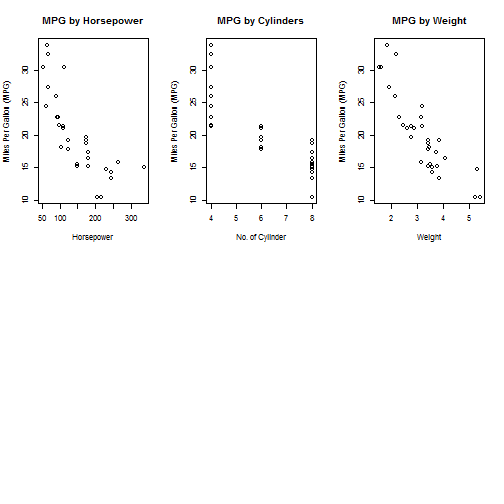

The prediction is for Miles per Gallon (MPG) based on the input of Gross Horsepower, No. of Cylinders and Weight entered by the users.
The ShinyApp has been deployed. Click here to launch the App.
Wee Way Huay
The prediction is for Miles per Gallon (MPG) based on the input of Gross Horsepower, No. of Cylinders and Weight entered by the users.
The ShinyApp has been deployed. Click here to launch the App.
mtcars dataset is be used in the Miles per Gallon (MPG) prediction.
data(mtcars)
head(mtcars, 5)
## mpg cyl disp hp drat wt qsec vs am gear carb
## Mazda RX4 21.0 6 160 110 3.90 2.620 16.46 0 1 4 4
## Mazda RX4 Wag 21.0 6 160 110 3.90 2.875 17.02 0 1 4 4
## Datsun 710 22.8 4 108 93 3.85 2.320 18.61 1 1 4 1
## Hornet 4 Drive 21.4 6 258 110 3.08 3.215 19.44 1 0 3 1
## Hornet Sportabout 18.7 8 360 175 3.15 3.440 17.02 0 0 3 2
Henderson and Velleman (1981), Building multiple regression models interactively. Biometrics, 37, 391–411.
Linear model is used in this course project to predict the fuel efficiency of Miles per Gallon (MPG).
Model <- lm(mpg ~ hp + cyl + wt, data=mtcars)
mpg <- function(hp, cyl, wt) {
Model$coefficients[1] + Model$coefficients[2] * hp +
Model$coefficients[3] * cyl + Model$coefficients[4] * wt
}
par(mfrow = c(2, 3))
plot(mtcars$hp, mtcars$mpg, main="MPG by Horsepower", xlab = "Horsepower"
, ylab = "Miles Per Gallon (MPG)")
plot(mtcars$cyl, mtcars$mpg, main="MPG by Cylinders", xlab = "No. of Cylinder"
, ylab = "Miles Per Gallon (MPG)")
plot(mtcars$wt, mtcars$mpg, main="MPG by Weight", xlab = "Weight"
, ylab = "Miles Per Gallon (MPG)")
